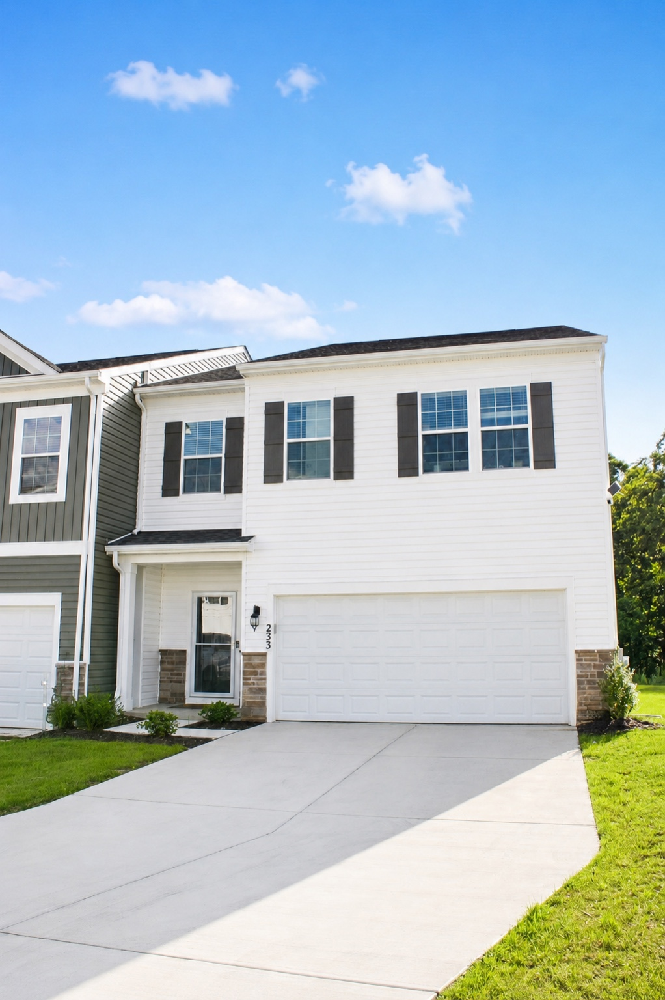
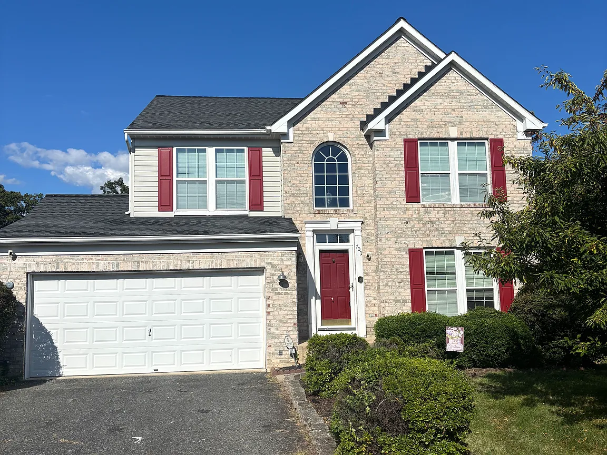
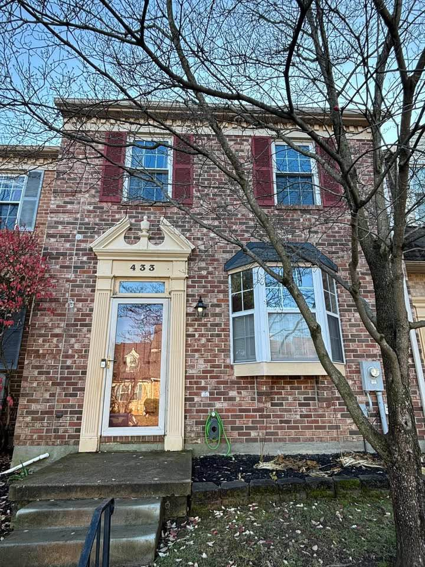
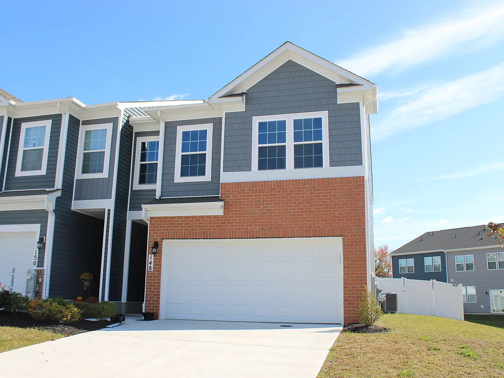
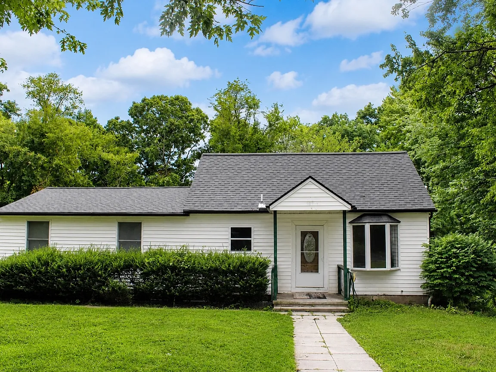
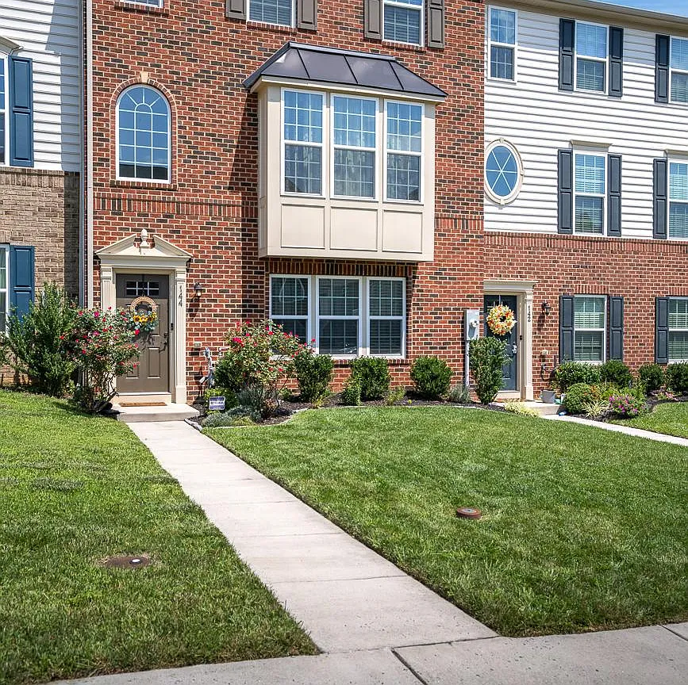

Tenant Placement Only
90% of First Full Month's Rent
Marketing, inquiry handling, tour coordination, applicant screening, lease signing, and move-in coordination for owners who want help placing a tenant.
MY Property Solutions is a locally owned residential property management company serving Harford County, Maryland. We help landlords with tenant placement, rent collection, maintenance coordination, quarterly inspections and lease support, with successful leasing experience in Havre de Grace, Bel Air, Joppa, Abingdon and Belcamp.
From tenant placement to ongoing management, our service options are designed for rental-property owners who want dependable local support and clear communication.
Marketing, inquiry handling, tour coordination, applicant screening, lease signing, and move-in coordination for owners who want help placing a tenant.
Tenant placement plus ongoing rent collection, maintenance coordination, inspections, lease enforcement, renewals, and tenant communication.
For Harford County landlords who already have a tenant and want professional ongoing management without a placement service.
Our published leasing portfolio includes these eight examples across Havre de Grace, Bel Air, Joppa, Abingdon and Belcamp. These are actual historical lease amounts, not current market averages or guaranteed rents.

Leased for $3,275/month
233 Correri St — end-unit townhome in Greenway Farms successfully marketed and leased.

Leased for $2,900/month
Rental property successfully leased with quality tenant placement.

Leased for $2,625/month
Bright and spacious home successfully leased after strong listing performance.

Leased for $3,200/month
Newly built rental home leased in just four days.

Leased for $2,800/month
Professionally marketed home successfully leased to qualified tenants.

Leased for $2,800/month
Single-family rental home successfully marketed and leased.

Leased for $2,900/month
Desirable rental home successfully leased following professional marketing.

Leased for $2,200/month
1416 Primrose Place — brick townhome with a finished walkout basement, deck, and private backyard, successfully leased.
We provide practical, hands-on property management with local market knowledge and straightforward service options.
We work throughout Harford County and understand the local rental market, leasing activity, commuter demand, property types, and neighborhood-specific considerations.
We do not add a markup to maintenance or repair invoices, so owners see the actual cost of the work performed.
We consider the complete applicant profile, including credit history, income, employment, rental history, background information, and monthly obligations.
Full-service management includes inspections, rent collection, maintenance coordination, renewals, lease enforcement, and ongoing tenant communication.
Our core placement and management fees are published openly so owners know the service structure before getting started.
Owners have a local team to reach when questions, maintenance needs, tenant concerns, or leasing decisions arise.
We provide property management and tenant-placement support throughout Harford County, including these communities and nearby areas.
Compare our property management services and pricing, read our property management FAQ, or browse our Maryland landlord and homeowner resources.
See recently leased homes and current rental listings to get a feel for the properties we market and manage locally.
Visit the MY Property Solutions Facebook page for current recommendations, rental updates, and company news.
Facebook ReviewsRead our local guides: Harford County property management costs and how to rent out your Harford County home.
MY Property Solutions charges 90% of one full month's rent for tenant placement only, 80% of one full month's rent plus 8% monthly for full-service management, or 10% monthly for management only when an owner already has a tenant.
Yes. We serve Aberdeen, Havre de Grace, Belcamp, Abingdon, Edgewood and other Harford County communities. Owners relocating for work or military assignments can contact us to discuss leasing and ongoing management.
Our local team personally conducts showings and quarterly inspections for full-service managed properties. We also coordinate maintenance with independent contractors without adding repair markups.
Yes. Contact us with your property's location, size, condition and features. We can discuss comparable rentals, pricing and preparation before marketing your home.
Check applicable municipal and county requirements, Maryland lead paint compliance for older homes, insurance, HOA restrictions and property condition. Requirements vary by property and jurisdiction; we can help owners identify the relevant steps.
More property management questions · Discuss your rental property
Tell us about your rental property and the level of support you need. We can help you compare tenant placement, full-service management, and management-only options.